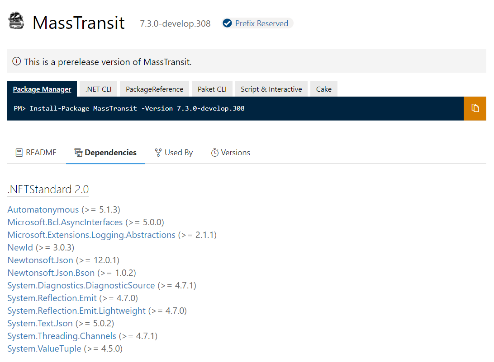

John Mason - 21-11-2021
Migrating to .NET Core
ASP.NET Core 3.x is only supported on .NET Core 3.0 because it targets netstandard2.1.
.NET Framework only supports netstandard2.0 and will never support netstandard2.1.
This is what makes the upgrade process challenging because if you can get everything compatible with netstandard2.0 you'll be 100% compatible with .NET Core 2.1.
Once your application can be run on .NET Core 2.1, you can then migrate .NET Core 3.x.
The recommendation is to migrate to ASP.NET Core 2.1 and run the application on .NET Framework 4.8. With the long term goal being able to run the application on the latest ASP.NET Core on .NET Core however, before you can do that you need to be fully compatible with netstandard2.0.
.NET Portability Analyzer
In order to migrate your application from .NET Framework to .NET Core one of the steps is to make sure your that all your code which targets the .NET Framework BCL (Base Class Libary) is compatible with the .NET Core BCL. You can use the .NET Portability Analyzer to help speed up the process.
.NET Framework and .NET Core may share the name .NET however they have different Runtimes and Base Class Libaries. The Base Class Libary is what the libary is built up of and helps to build up the .NET types such as Object, String, Boolean, Array, List, DateTime and other primitive types and data structures.
If you want to be able to share code between .NET Framework applications and .NET Core applications this is where .NET Standard comes in. Both .NET Framework and .NET Core are compatible with .NET Standard 2.0 so if you aim to have your two different types of applications compatible with .NET Standard 2.0 then your application will be able to share code/libaries and run on both .NET Framework or .NET Core.
As a reminder .NET Framework 4.8 supports .NET Standard 2.0 and .NET Core 2.1 supports .NET Standard 2.0 and because they both support .NET Standard 2.0 they can run on either.
A small note however is that when serializing BCL types in different versions of .NET the outputs can be different due to the types that are in the Base Class Libary.
When serializing a List<string> in .NET Framework here's the output:
{
"$type": "System.Collections.Generic.List`1[[System.String, mscorlib]], mscorlib",
"$values": [
"John",
"Bill"
]
}
And serializing the same List<string> in .NET Core:
{
"$type": "System.Collections.Generic.List`1[[System.String, System.Private.CoreLib]], System.Private.CoreLib",
"$values": [
"John",
"Bill"
]
}
As you can see, the Base Class Libary type is different and this would throw a JsonSerializationException.
Here's where the .NET Portability Analzyer comes in. This is a tool which analyzes your codebase and provides a report about what types your using from the BCLs that are supported in .NET Standard and .NET Core.
You can then use the report generated to determine how far away you are from being able to fully migrate to .NET Core. The .NET Core team have been working hard to add support to a lot of the types and APIs that exist in .NET Framework to .NET Core however some will never be supported due to the design of the .NET version the team has gone down, most notably any types that live in the System.Web namespace.
You can run the tool in two different ways, the simplest being the Visual Studio Extension which once installed you can run it through the solution context menu. You can also access the settings through the solution context menu where you can select which platforms and versions of platforms you'd like to review against when running the tool. Once you've ran the tool it will generate an Excel file containing the report showing which types in your code are not supported against the target platform you specified. This report will be super helpful in finding all the types in your codebase that aren't supported in .NET Core and once you've got your list it's up to you to decide how you want to handle it or rewrite the old code.
The second way to run the tool would be to build the .NET Portability Analyer and run it against your assembly. Checkout how to do that on the projects Github repo.
Multi-Targeted Nuget Package
One of the steps of upgrading your applications is making sure all dependencies via Nuget will work on .NET Core. Nowadays most packages will be multi-targeted which means the package will target various versions of the .NET Framework, .NET Core and .NET Standard. However, there are a few things to be wary of but before I go through them your goal needs to be to go through all your Nuget dependencies and confirm they're targeting .NET Core or .NET Standard.
The simplest way to do this is to go onto nutget.org and search for your package. Under the dependencies section of the package it will list each platform it targets and what version of it. As well as that it will also list the dependencies it needs when running on that platform.

To make sure your Nuget package is compatible you need to make sure .NET Standard 2.0 (or lower) or .NET Core is in the list.
You would assume that if the package has .NET Standard 2.0 or .NET Core then it would behave the same under the version of .NET you want to target however this isn't the case. This is because libary authors will use #if directives to have certain code only exist when running on a specific version of .NET and this can lead to different behaviour when running the exact same code on .NET Framework or .NET Core.
Libary authors also use #if directives to leave out APIs for certain .NET targets meaning something in the .NET Framework version might not exist in the .NET Core version.
NugGet Package Alternatives
There will come a time where one of your Nuget dependencies aren't compatible with .NET Standard 2.0. Some packages will be compatible with .NET Standard 2.1 meaning it's compatible with .NET Core 3.0 or higher however that's a problem when your migrating from ASP.NET on .NET Standard because your aiming for .NET Standard 2.0. In some occasions there will be forks of the package that people have created which will support .NET Standard 2.0 however that would require trusting a new dependency you might not trust compared to the original package. Your now left with a few options. One would be to remove the external dependency from your system and code your own solution by either forking the old package or creating the package from scratch. Or you could find a new dependency which does support .NET Standard 2.0 and then rewrite your old code so it implements the new package.